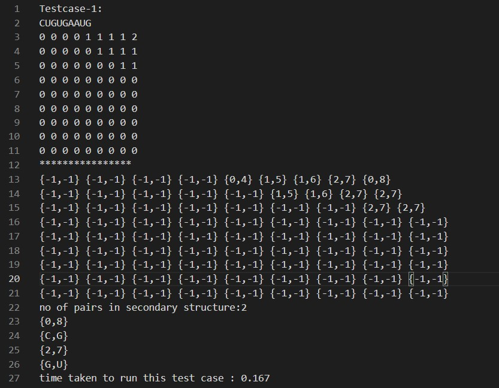
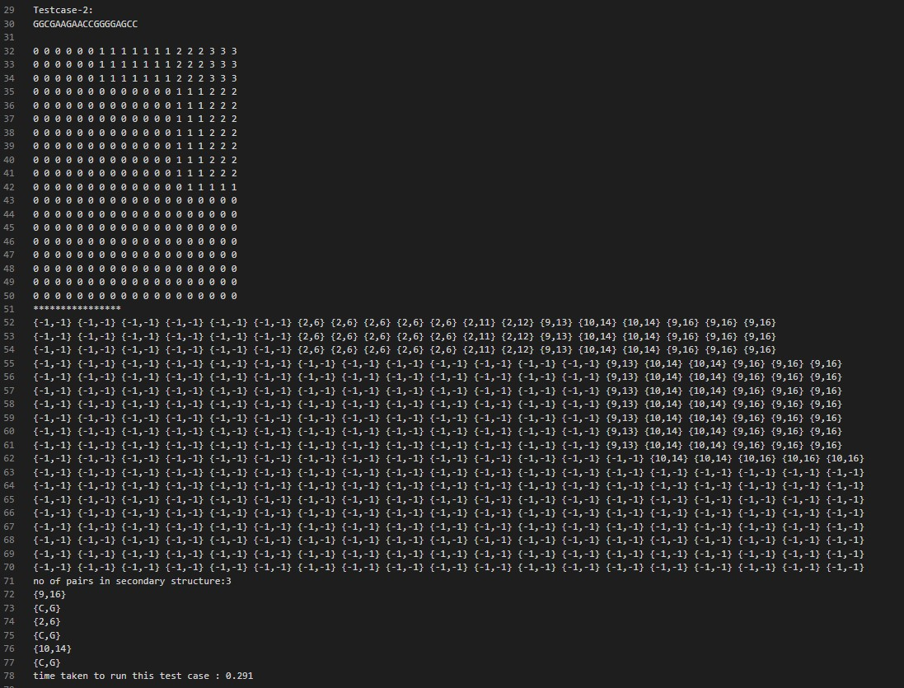

Current RNA secondary structure prediction methods are mainly based on the minimum free energy algorithm, which finds the optimal folding state of RNA in vivo using an iterative method to meet the minimum energy or other constraints.
Now we'll look at the table with different inputs , their run times and their number of vector pairs
| Size of Input | Run Time | Number of Pairs in secondary structure |
|---|---|---|
| 9 | 0.167 | 2 |
| 19 | 0.291 | 3 |
| 43 | 1.814 | 8 |
| 14 | 0.175 | 3 |
| 100 | 7.75 | 31 |
| 2 | 0.012 | 0 |
Now we'll look at how run time is effected by input size
| Input Size | Run Time |
|---|---|
| 2 | 0.012 |
| 9 | 0.167 |
| 14 | 0.175 |
| 19 | 0.291 |
| 43 | 1.814 |
| 100 | 7.75 |
Now we'll look at how run time is effected by Number of Pairs in secondary structure
| Number of Pairs in secondary structure | Run Time |
|---|---|
| 0 | 0.012 |
| 2 | 0.167 |
| 3 | 0.175 |
| 3 | 0.291 |
| 8 | 1.814 |
| 100 | 7.75 |
TESTCASE - 1
TESTCASE - 2
TESTCASE - 3 with the input
GGGUGUAGAAAAGUAAGGGAAACUCAAACCCCUUUCUACACCC
(We have not included the DP tables in this picture as it is very big table and could not fit in a pic)